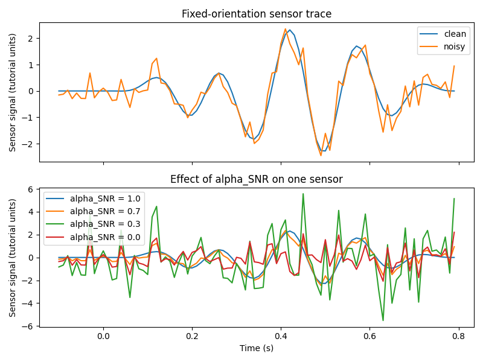

Note
Go to the end to download the full example code.
04. Sensor Simulation#
This tutorial mainly explains the SensorSimulator class. It projects
source activity through a leadfield, then adds Gaussian sensor noise with the
alpha_SNR mixing rule implemented by SensorSimulator.
The examples cover:
fixed-orientation projection;
free-orientation EEG projection;
free-orientation MEG projection;
the effect of different
alpha_SNRsettings;workflow noise-variance quantities used downstream by source estimation.
Scientific motivation#
Source simulation produces ground-truth dipole moments at source locations,
but inverse solvers operate on sensor measurements. SensorSimulator bridges
this gap by applying the forward model:
y_clean = L x
and then adding white sensor noise:
y_noisy = y_clean + eta * eps.
Here eps is Gaussian noise and eta is chosen from alpha_SNR using
Frobenius norms. The result is a controlled sensor-level dataset that can be
passed to inverse solvers.
In the current CaliBrain workflow, this sensor-level simulation also defines the three noise-variance modes used later by source estimation:
oracle: use the variance of the injected sensor noise;baseline: estimate variance from the pre-stimulus sensor segment;adaptive_joint_learning: do not fixnoise_varhere; let the solver learn it jointly from the data.
import matplotlib.pyplot as plt
import numpy as np
from mne.io.constants import FIFF
from calibrain import SensorSimulator, SourceSimulator
RANDOM_SEED = 31
Configure source simulation#
Source amplitudes are in nAm. The leadfield units determine the sensor
units:
if
Lis infT / nAm, then sensor outputs are infT;if
Lis inµV / nAm, then sensor outputs are inµV.
erp_config = {
"tmin": -0.1,
"tmax": 0.8,
"stim_onset": 0.0,
"sfreq": 100,
"fmin": 2,
"fmax": 8,
"amplitude_distribution": {
"median": 8.0,
"sigma": 0.15,
"clip": [2.0, 20.0],
},
"random_erp_timing": False,
"erp_min_length": 20,
}
source_simulator = SourceSimulator(ERP_config=erp_config)
sensor_simulator = SensorSimulator()
times = np.arange(
erp_config["tmin"],
erp_config["tmax"],
1.0 / erp_config["sfreq"],
)
Build small tutorial leadfields#
These are synthetic leadfields for demonstration only:
fixed: shape
(n_sensors, n_sources);free EEG: shape
(n_sensors, n_sources, 3)inµV / nAm;free MEG: shape
(n_sensors, n_sources, 2)infT / nAm.
rng = np.random.default_rng(RANDOM_SEED)
n_sensors = 16
n_sources = 40
leadfield_fixed = rng.normal(scale=0.15, size=(n_sensors, n_sources))
leadfield_free_eeg = rng.normal(scale=0.03, size=(n_sensors, n_sources, 3))
leadfield_free_meg = rng.normal(scale=4.0, size=(n_sensors, n_sources, 2))
Simulate source activity#
The three source arrays match the three leadfield conventions used below.
x_fixed, active_fixed = source_simulator.simulate(
n_sources=n_sources,
nnz=4,
orientation_type="fixed",
seed=RANDOM_SEED,
)
x_free_eeg, active_free_eeg = source_simulator.simulate(
n_sources=n_sources,
nnz=4,
orientation_type="free",
coil_type=FIFF.FIFFV_COIL_EEG,
seed=RANDOM_SEED,
)
x_free_meg, active_free_meg = source_simulator.simulate(
n_sources=n_sources,
nnz=4,
orientation_type="free",
coil_type=FIFF.FIFFV_COIL_VV_MAG_T1,
seed=RANDOM_SEED,
)
print("fixed source shape:", x_fixed.shape)
print("free EEG source shape:", x_free_eeg.shape)
print("free MEG source shape:", x_free_meg.shape)
fixed source shape: (40, 90)
free EEG source shape: (40, 3, 90)
free MEG source shape: (40, 2, 90)
Fixed-orientation sensor simulation#
For fixed orientation, projection is simple matrix multiplication
y_clean = L @ x.
sensor_simulator.set_sensor_metadata(
kind=FIFF.FIFFV_MEG_CH,
units=FIFF.FIFF_UNIT_T,
unitmult=FIFF.FIFF_UNITM_F,
coil_type=FIFF.FIFFV_COIL_VV_MAG_T1,
)
y_fixed_clean, y_fixed_noisy, fixed_noise, fixed_eta = sensor_simulator.simulate(
x=x_fixed,
L=leadfield_fixed,
alpha_SNR=0.7,
sensor_white_noise_std=1.0,
seed=RANDOM_SEED,
)
print("fixed sensor shape:", y_fixed_clean.shape)
print("fixed eta:", fixed_eta)
print("sensor units:", sensor_simulator.units, "unitmult:", sensor_simulator.unitmult)
fixed sensor shape: (16, 90)
fixed eta: 0.36793688114720363
sensor units: 112 (FIFF_UNIT_T) unitmult: -15 (FIFF_UNITM_F)
Free-orientation EEG sensor simulation#
EEG free orientation uses three local components per source, so the leadfield
shape is (n_sensors, n_sources, 3).
sensor_simulator.set_sensor_metadata(
kind=FIFF.FIFFV_EEG_CH,
units=FIFF.FIFF_UNIT_V,
unitmult=FIFF.FIFF_UNITM_MU,
coil_type=FIFF.FIFFV_COIL_EEG,
)
y_eeg_clean, y_eeg_noisy, eeg_noise, eeg_eta = sensor_simulator.simulate(
x=x_free_eeg,
L=leadfield_free_eeg,
alpha_SNR=0.7,
sensor_white_noise_std=0.1,
seed=RANDOM_SEED,
)
print("free EEG sensor shape:", y_eeg_clean.shape)
print("free EEG eta:", eeg_eta)
free EEG sensor shape: (16, 90)
free EEG eta: 1.1724223634943463
Free-orientation MEG sensor simulation#
MEG free orientation uses the reduced two-component representation, so the
leadfield shape is (n_sensors, n_sources, 2).
sensor_simulator.set_sensor_metadata(
kind=FIFF.FIFFV_MEG_CH,
units=FIFF.FIFF_UNIT_T,
unitmult=FIFF.FIFF_UNITM_F,
coil_type=FIFF.FIFFV_COIL_VV_MAG_T1,
)
y_meg_clean, y_meg_noisy, meg_noise, meg_eta = sensor_simulator.simulate(
x=x_free_meg,
L=leadfield_free_meg,
alpha_SNR=0.7,
sensor_white_noise_std=1.0,
seed=RANDOM_SEED,
)
print("free MEG sensor shape:", y_meg_clean.shape)
print("free MEG eta:", meg_eta)
free MEG sensor shape: (16, 90)
free MEG eta: 13.298082191264779
Workflow noise-variance estimates#
The workflow does not use alpha_SNR directly as a solver input. Instead,
after sensor simulation it derives named noise-variance modes:
oracleusesvar(noise);baselineuses the pre-stimulus segment ofy_noisy;adaptive_joint_learningpasses no fixednoise_varto the solver.
The baseline estimate depends on tmin, stim_onset, and sfreq.
tmin = erp_config["tmin"]
stim_onset = erp_config["stim_onset"]
sfreq = erp_config["sfreq"]
pre_stimulus_onset = int((stim_onset - tmin) * sfreq)
y_pre = y_fixed_noisy[:, :pre_stimulus_onset]
oracle_noise_var = float(np.var(fixed_noise))
baseline_noise_var = float(np.mean(np.std(y_pre, axis=1) ** 2))
print("oracle noise variance:", oracle_noise_var)
print("baseline noise variance:", baseline_noise_var)
print("adaptive joint learning noise variance:", None)
oracle noise variance: 0.13790136520275284
baseline noise variance: 0.12615502818075974
adaptive joint learning noise variance: None
Effect of alpha_SNR#
alpha_SNR is a mixing parameter in [0, 1]:
1.0means no added noise;0.0means pure scaled noise;intermediate values mix signal and noise.
alpha_values = [1.0, 0.7, 0.3, 0.0]
alpha_outputs = []
for alpha in alpha_values:
alpha_outputs.append(
sensor_simulator.simulate(
x=x_fixed,
L=leadfield_fixed,
alpha_SNR=alpha,
sensor_white_noise_std=1.0,
seed=RANDOM_SEED,
)
)
Plot sensor traces#
The first plot compares clean and noisy fixed-orientation sensor traces for
one representative sensor. The second plot shows how alpha_SNR changes the
observed trace.
sensor_idx = 0
fig, axes = plt.subplots(2, 1, figsize=(8, 6), sharex=True)
axes[0].plot(times, y_fixed_clean[sensor_idx], label="clean")
axes[0].plot(times, y_fixed_noisy[sensor_idx], label="noisy")
axes[0].set(
ylabel="Sensor signal (tutorial units)",
title="Fixed-orientation sensor trace",
)
axes[0].legend(loc="best")
for alpha, (_, y_noisy_alpha, _, _) in zip(alpha_values, alpha_outputs):
axes[1].plot(times, y_noisy_alpha[sensor_idx], label=f"alpha_SNR = {alpha}")
axes[1].set(
xlabel="Time (s)",
ylabel="Sensor signal (tutorial units)",
title="Effect of alpha_SNR on one sensor",
)
axes[1].legend(loc="best")
fig.tight_layout()

Compare sensor energy across modalities#
The absolute magnitudes differ because the synthetic leadfields use different unit conventions. The relevant comparison here is structural, not absolute: shape compatibility and the effect of noise mixing.
energy_summary = {
"fixed clean": np.linalg.norm(y_fixed_clean, ord="fro"),
"fixed noisy": np.linalg.norm(y_fixed_noisy, ord="fro"),
"free EEG clean": np.linalg.norm(y_eeg_clean, ord="fro"),
"free MEG clean": np.linalg.norm(y_meg_clean, ord="fro"),
}
print(energy_summary)
{'fixed clean': np.float64(32.89446394819959), 'fixed noisy': np.float64(35.67080778140602), 'free EEG clean': np.float64(10.481744870962862), 'free MEG clean': np.float64(1188.8813207767196)}
What this stage produces#
SensorSimulator.simulate returns:
y_clean: noiseless sensor data;y_noisy: sensor data after additive white noise;noise: the added noise term;eta: the scaling factor implied byalpha_SNR.
These outputs are the direct inputs to CaliBrain inverse solvers.
Total running time of the script: (0 minutes 0.240 seconds)